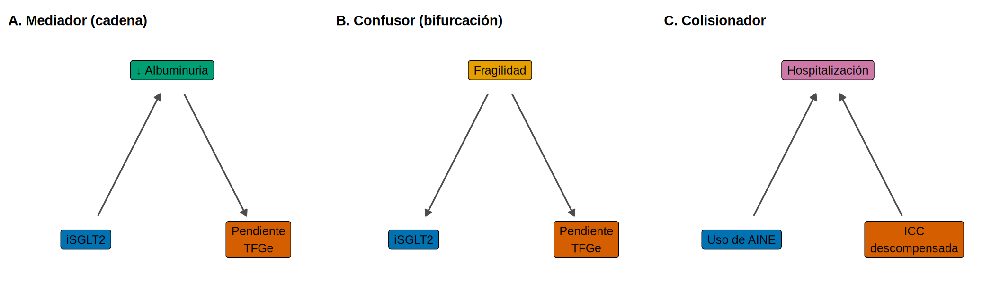
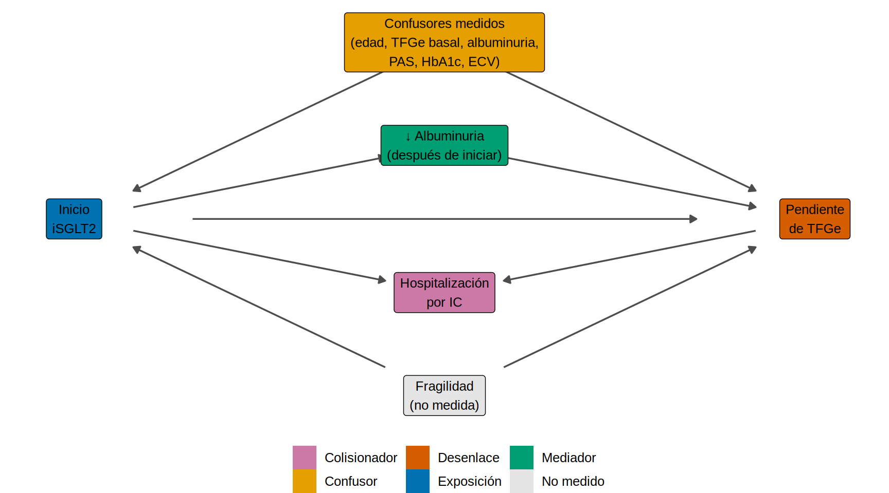
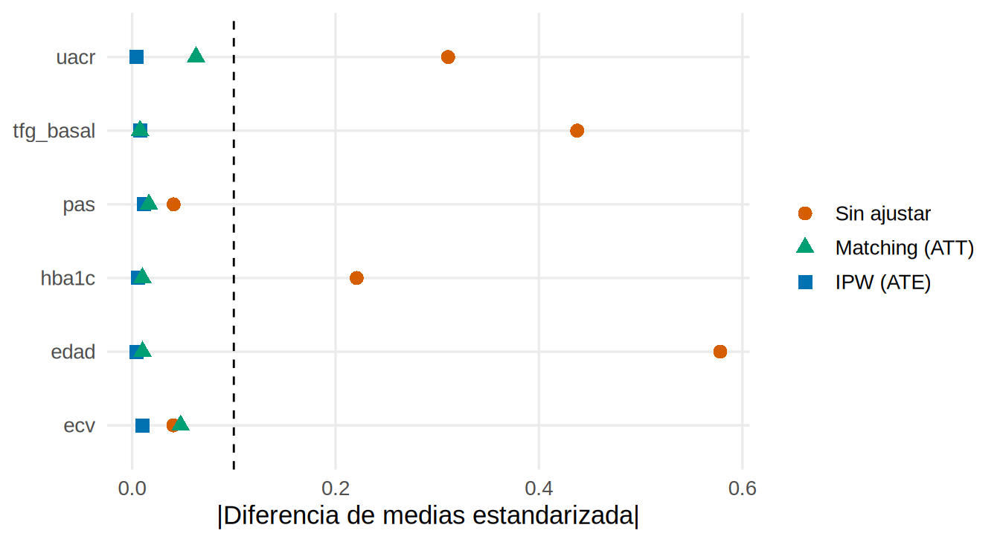

library(tidyverse)
library(MatchIt)
source("R/funciones_epi.R")
theme_set(theme_minimal(base_size = 13) + theme(panel.grid.minor = element_blank()))
# {dagitty} es opcional para renderizar el libro: sin él se omiten solo los bloques que lo usan
tiene_dagitty <- requireNamespace("dagitty", quietly = TRUE)
if (!tiene_dagitty) message("Instala {dagitty} con install.packages('dagitty') para ejecutar los bloques de DAG.")Causalidad con diagramas causales (DAG)
“Correlación no implica causalidad” es una advertencia correcta pero insuficiente: como nefrólogos sí necesitamos decidir si un fármaco, una dieta o un procedimiento causa un mejor desenlace. Los grafos acíclicos dirigidos (DAG, por sus siglas en inglés) son la herramienta para dibujar nuestras suposiciones causales y, a partir de ellas, decidir qué variables ajustar y cuáles no.
Nota🩺 Un ejemplo para empezar
Los servicios con más nefrólogos por habitante reportan más casos de ERC. ¿Más nefrólogos causan más ERC? Más bien, donde hay más nefrólogos se detecta y se registra más ERC (sesgo de vigilancia o de detección). Una asociación puede ser real y, aun así, no ser la causa que imaginamos. Los DAG nos obligan a explicitar qué esperamos que cause qué.
En este capítulo aprenderás a:
- leer y dibujar un DAG (nodos, flechas, caminos);
- reconocer las tres estructuras básicas: mediador, confusor y colisionador;
- aplicar el criterio de la puerta trasera para elegir el conjunto de ajuste;
- comparar tres formas de ajustar: regresión, emparejamiento y ponderación.
¿Qué es un DAG?
Un DAG tiene tres elementos:
- Nodos: variables (medidas o no medidas).
- Flechas: una flecha \(A \rightarrow B\) afirma que A es causa directa de B. Si no hay flecha, estás afirmando que no hay efecto directo: ausencias de flechas son suposiciones fuertes.
- Acíclico: no puede haber ciclos. Si hay retroalimentación (p. ej., TFGe → anemia → TFGe), se representa con variables en distintos momentos (\(TFGe_{t-1} \rightarrow Hb_t \rightarrow TFGe_t\)).
Tip💡 Tip práctico: cómo dibujar tu primer DAG
- Escribe la exposición y el desenlace.
- Pregúntate: ¿qué variables causan (o podrían causar) la exposición? y ¿cuáles el desenlace? Márcalas.
- Las que causan ambas son confusores.
- Añade lo que está entre exposición y desenlace (mediadores) y lo que ambos causan (colisionadores).
- Incluye también lo que no mediste (nodos “no medidos”).
- Pide a un colega nefrólogo que lo critique: ahí está el valor del DAG.
Tres estructuras básicas
Cualquier DAG complejo se construye con tres piezas. Entenderlas basta para saber qué ajustar.
panel <- function(nodos, aristas, titulo) {
dibujar_dag(nodos, aristas, tam_texto = 3.3, expandir = c(0.45, 0.25)) + labs(title = titulo) +
theme(legend.position = "none", plot.title = element_text(face = "bold", size = 11))
}
pA <- panel(
tribble(~nombre,~x,~y,~etiqueta,~rol,
"X",1,1,"iSGLT2","exposicion", "M",2,1.6,"↓ Albuminuria","mediador",
"Y",3,1,"Pendiente\nTFGe","desenlace"),
tribble(~de,~a, "X","M", "M","Y"), "A. Mediador (cadena)")
pB <- panel(
tribble(~nombre,~x,~y,~etiqueta,~rol,
"X",1,1,"iSGLT2","exposicion", "C",2,1.6,"Fragilidad","confusor",
"Y",3,1,"Pendiente\nTFGe","desenlace"),
tribble(~de,~a, "C","X", "C","Y"), "B. Confusor (bifurcación)")
pC <- panel(
tribble(~nombre,~x,~y,~etiqueta,~rol,
"X",1,1,"Uso de AINE","exposicion", "K",2,1.6,"Hospitalización","colisionador",
"Y",3,1,"ICC\ndescompensada","desenlace"),
tribble(~de,~a, "X","K", "Y","K"), "C. Colisionador")
patchwork::wrap_plots(pA, pB, pC, nrow = 1)
| Estructura | ¿Transmite asociación entre X e Y? | ¿Qué hago? | Ejemplo |
|---|---|---|---|
| Mediador (\(X \to M \to Y\)) | Sí: es parte del efecto que queremos medir | No ajustar si quiero el efecto total | Albuminuria entre iSGLT2 y TFGe |
| Confusor (\(X \leftarrow C \to Y\)) | Sí: crea una asociación espuria | Ajustar (cierra el camino) | Fragilidad |
| Colisionador (\(X \to K \leftarrow Y\)) | No (el camino está cerrado) | No ajustar ni restringir por \(K\): abriría el camino y crearía una asociación falsa | Hospitalización |
Comprobémoslo con simulaciones sencillas (así verás por qué ocurre y no solo que ocurre).
Confusor: ajustar elimina la asociación espuria
set.seed(1)
n <- 5000
fragil <- rbinom(n, 1, 0.3) # confusor
tratado <- rbinom(n, 1, plogis(-0.5 - 1.5 * fragil)) # los frágiles reciben menos el fármaco
pendiente <- -2 - 1.0 * fragil + 0 * tratado + rnorm(n) # el fármaco NO tiene efecto en esta simulación
d_conf <- tibble(fragil, tratado, pendiente)
coef(lm(pendiente ~ tratado, d_conf))["tratado"] # sin ajustar: asociación espuria tratado
0.2266726 coef(lm(pendiente ~ tratado + fragil, d_conf))["tratado"] # ajustando: ≈ 0 tratado
-0.01058657 Mediador: ajustar elimina parte del efecto que queríamos medir
set.seed(2)
tratado <- rbinom(n, 1, 0.5) # aleatorizado: sin confusión
albumin <- 5 - 1.0 * tratado + rnorm(n) # el fármaco reduce la albuminuria
pendiente <- -1 - 0.6 * albumin + rnorm(n) # menos albuminuria => mejor pendiente
d_med <- tibble(tratado, albumin, pendiente)
coef(lm(pendiente ~ tratado, d_med))["tratado"] # efecto TOTAL (≈ 0.6) tratado
0.6796223 coef(lm(pendiente ~ tratado + albumin, d_med))["tratado"] # efecto directo (≈ 0): ¡"desapareció"! tratado
0.05622981 Al ajustar por albuminuria “eliminamos” el efecto, porque el fármaco actúa a través de ella. Eso puede ser lo que queremos (efecto directo, análisis de mediación), pero no si queremos el efecto total.
Colisionador: ajustar crea una asociación que no existe
set.seed(3)
aine <- rbinom(n, 1, 0.30)
icc <- rbinom(n, 1, 0.20) # independientes entre sí
hosp <- rbinom(n, 1, plogis(-3 + 2.5 * aine + 2.5 * icc)) # ambos causan hospitalización
d_col <- tibble(aine, icc, hosp)
# En toda la población: sin asociación
coef(glm(icc ~ aine, binomial, d_col))["aine"] aine
0.009518216 # Restringiendo a hospitalizados (o ajustando por hospitalización): ¡asociación negativa falsa!
coef(glm(icc ~ aine, binomial, filter(d_col, hosp == 1)))["aine"] aine
-1.170867
Advertencia⚠️ El error más frecuente: “ajustar por todo”
Ajustar por una variable que es consecuencia de la exposición (mediador) o consecuencia común (colisionador) introduce sesgo. La regla de “meter todas las variables disponibles en el modelo” es un mal hábito: ajusta por las que dice el DAG, no por las que tienes a mano. Este error es muy común cuando se restringe el análisis a pacientes hospitalizados o ya en diálisis.
Caminos abiertos, caminos cerrados y el criterio de la puerta trasera
Un camino es cualquier secuencia de flechas que conecta dos variables, sin importar su dirección. Está:
- abierto si transmite asociación;
- cerrado (bloqueado) si no la transmite.
Reglas (d-separación):
- Un camino con un mediador o confusor está abierto; al ajustar por esa variable se cierra.
- Un camino con un colisionador está cerrado; al ajustar por el colisionador (o por un descendiente suyo) se abre.
El efecto causal de \(X\) sobre \(Y\) se identifica si bloqueamos todos los caminos de puerta trasera (los que empiezan con una flecha hacia \(X\)) sin tocar los caminos causales ni abrir colisionadores. A ese conjunto se le llama conjunto de ajuste.
Importante🎯 Criterio de la puerta trasera, paso a paso
- Lista todos los caminos entre exposición y desenlace.
- Identifica los que empiezan con una flecha que entra a la exposición (puerta trasera).
- Elige variables que bloqueen todos esos caminos.
- Verifica que no incluyes mediadores ni colisionadores (ni descendientes de ellos).
Nuestro DAG: iSGLT2 y pendiente de TFGe
Retomamos la pregunta del Capítulo 3.2. Representamos las suposiciones causales de la simulación (la fragilidad existe pero no se mide en el registro). Además incluimos dos variables posteriores al tratamiento para mostrar qué no hay que ajustar: la reducción de albuminuria (mediador) y la hospitalización por insuficiencia cardiaca (colisionador).
# Relaciones causales completas (las usa {dagitty} más abajo)
aristas <- tribble(
~de, ~a,
"X", "Y",
"X", "med", "med", "Y", # mediador: iSGLT2 -> menos albuminuria -> mejor TFGe
"X", "col", "Y", "col", # colisionador: hospitalización por IC (causada por ambos)
"edad", "X", "edad", "Y", "edad", "tfg", "edad", "pas", "edad", "ecv", "edad", "frag",
"frag", "X", "frag", "Y",
"tfg", "X", "tfg", "Y", "tfg", "uacr",
"ecv", "X", "ecv", "Y",
"uacr", "X", "uacr", "Y",
"hba1c", "X", "hba1c","Y", "hba1c","uacr",
"pas", "Y", "pas", "uacr"
)Para dibujarlo sin enredar las flechas, agrupamos los confusores medidos en un solo nodo (las relaciones entre ellos, como edad → TFGe o HbA1c → albuminuria, están en el código de arriba):
nodos <- tribble(
~nombre, ~x, ~y, ~etiqueta, ~rol,
"X", 1, 2, "Inicio\niSGLT2", "exposicion",
"Y", 7, 2, "Pendiente\nde TFGe", "desenlace",
"C", 4, 4.4, "Confusores medidos\n(edad, TFGe basal, albuminuria,\nPAS, HbA1c, ECV)", "confusor",
"frag", 4, -0.4, "Fragilidad\n(no medida)", "no medido",
"med", 4, 3.0, "↓ Albuminuria\n(después de iniciar)", "mediador",
"col", 4, 1.0, "Hospitalización\npor IC", "colisionador"
)
aristas_dibujo <- tribble(
~de, ~a,
"X", "Y",
"X", "med", "med", "Y",
"X", "col", "Y", "col",
"C", "X", "C", "Y",
"frag", "X", "frag", "Y"
)
dibujar_dag(nodos, aristas_dibujo, encoger = 0.16, tam_texto = 3.4, expandir = c(0.10, 0.12))
Leer el DAG con {dagitty}
Pasamos el mismo DAG al paquete dagitty para que calcule por nosotros los caminos y los conjuntos de ajuste.
library(dagitty)
dag_ckd <- dagitty(paste0(
"dag { ",
paste(aristas$de, "->", aristas$a, collapse = "; "),
" }"
))
exposures(dag_ckd) <- "X"
outcomes(dag_ckd) <- "Y"
# Caminos entre exposición y desenlace (abiertos si no ajustamos nada)
paths(dag_ckd)$paths |> head(8)Conjuntos de ajuste. Con todas las variables medibles, el algoritmo propone un conjunto mínimo. Como la fragilidad es un confusor (flechas a X e Y), forma parte de él:
adjustmentSets(dag_ckd, effect = "total")Fíjate en lo que no aparece: el mediador (↓ albuminuria posterior) y el colisionador (hospitalización) nunca forman parte del ajuste. Tampoco hace falta la PAS: está en un camino que ya se cierra al ajustar por albuminuria.
Ahora declaramos que la fragilidad no se midió:
latents(dag_ckd) <- "frag"
adjustmentSets(dag_ckd, effect = "total") # ¿queda algún conjunto válido con lo que sí medimos?Cuando la fragilidad es no medida no queda ningún conjunto de ajuste válido (la salida está vacía): con estos datos, ajustar por todo lo medido no identifica el efecto. Esa será la tensión del Capítulo 3.4: haremos el mejor análisis posible y luego cuantificaremos cuánto podría cambiar el resultado por esta confusión no medida.
Tip💡 Tip práctico
- Alternativa sin programar: https://www.dagitty.net permite dibujar el DAG con el ratón, marcar nodos no medidos y ver los conjuntos de ajuste.
- Un DAG no se “demuestra”: se argumenta y se critica. Los DAG también implican independencias comprobables, que podemos verificar en los datos.
Verificar implicaciones del DAG con los datos
Un DAG afirma que ciertas variables son independientes (condicionando en otras). Eso se puede contrastar; si lo que afirma el DAG no se observa en los datos, hay que revisarlo.
ckd <- read_csv("Bases/ckd_isglt2.csv", show_col_types = FALSE)
# Implicación 1: HbA1c no se relaciona con la edad (no hay camino entre ellas)
cor.test(ckd$hba1c, ckd$edad)$estimate cor
0.03158912 # Implicación 2: la ECV previa es independiente de la albuminuria dado edad y sexo
summary(lm(log(uacr) ~ ecv + edad + sexo, data = ckd))$coefficients["ecv", ] Estimate Std. Error t value Pr(>|t|)
-0.0386479 0.0343642 -1.1246559 0.2607889 # Implicación 3: la PAS es independiente de la HbA1c
cor.test(ckd$pas, ckd$hba1c)$estimate cor
-0.007471257 Los coeficientes y correlaciones son cercanos a cero, como el DAG predice. Si, por ejemplo, la ECV predijera fuertemente la albuminuria aun después de condicionar por edad y sexo, deberíamos añadir una flecha al DAG.
Cómo ajustar: regresión, emparejamiento y ponderación
Sabemos qué ajustar. Ahora, cómo. Con los datos del registro (sin fragilidad) comparamos tres estrategias. Primero, la estimación ingenua:
ingenuo <- coef(lm(pendiente_tfg ~ isglt2, data = ckd))[["isglt2"]]
ingenuo[1] 1.5016971. Regresión múltiple
Incluir los confusores como covariables:
formula_ajuste <- pendiente_tfg ~ isglt2 + edad + sexo + hba1c + pas + tfg_basal + log(uacr) + ecv
modelo_reg <- lm(formula_ajuste, data = ckd)
coef(modelo_reg)[["isglt2"]][1] 1.335595
Advertencia⚠️ Cuidado
La regresión ajusta bien solo si el modelo está bien especificado (relaciones lineales, sin interacciones omitidas). Cuando no estamos seguros, el emparejamiento y la ponderación son alternativas que hacen menos suposiciones sobre el modelo del desenlace. Además, “coeficiente del tratamiento” en un modelo con interacciones no es el ATE (ver estandarización en el Capítulo 3.2).
2. Emparejamiento (matching)
La idea: para cada paciente tratado, buscar uno o más no tratados con características similares y comparar solo entre ellos. Se descartan los no tratados sin pareja. Con {MatchIt}:
f_ps <- isglt2 ~ edad + sexo + hba1c + pas + tfg_basal + log(uacr) + ecv
emparejado <- matchit(
f_ps, data = ckd,
method = "nearest", # vecino más cercano
distance = "glm", # puntaje de propensión (regresión logística)
estimand = "ATT", # parejas para cada tratado
replace = TRUE # un control puede emparejarse con varios tratados
)
emparejadoA matchit object
- method: 1:1 nearest neighbor matching with replacement
- distance: Propensity score
- estimated with logistic regression
- number of obs.: 5000 (original), 3501 (matched)
- target estimand: ATT
- covariates: edad, sexo, hba1c, pas, tfg_basal, log(uacr), ecvdatos_emp <- match.data(emparejado)
est_matching <- coef(lm(pendiente_tfg ~ isglt2, data = datos_emp, weights = weights))[["isglt2"]]
est_matching[1] 1.51603El emparejamiento estima por definición el ATT (el efecto en los tratados). Los controles descartados no aportan información.
Tip💡 Tip práctico
Con replace = FALSE cada control se usa una sola vez; si hay pocos controles, el emparejamiento queda de mala calidad. Con replace = TRUE se usan más controles buenos, pero los errores estándar deben calcularse con bootstrap o errores robustos por conglomerado (vcov = ~subclass en {marginaleffects}). Mira siempre el balance después de emparejar.
3. Ponderación por probabilidad inversa (IPW)
En lugar de descartar pacientes, ponderamos a todos (Capítulo 3.2):
ps <- fitted(glm(f_ps, data = ckd, family = binomial()))
ckd <- ckd |> mutate(ps = ps, w_ate = isglt2 / ps + (1 - isglt2) / (1 - ps))
est_ipw <- coef(lm(pendiente_tfg ~ isglt2, data = ckd, weights = w_ate))[["isglt2"]]
est_ipw[1] 1.341753¿Funcionaron? El balance
Después de ponderar o emparejar, los confusores medidos deberían estar equilibrados entre tratados y no tratados. El indicador estándar es la diferencia de medias estandarizada (SMD); por convención, |SMD| < 0.1 indica buen balance.
vars <- c("edad", "hba1c", "pas", "tfg_basal", "uacr", "ecv")
balance <- tibble(
variable = vars,
`Sin ajustar` = map_dbl(vars, ~ smd(ckd[[.x]], ckd$isglt2)),
`IPW (ATE)` = map_dbl(vars, ~ smd(ckd[[.x]], ckd$isglt2, ckd$w_ate)),
`Matching (ATT)` = map_dbl(vars, ~ smd(datos_emp[[.x]], datos_emp$isglt2, datos_emp$weights))
) |>
pivot_longer(-variable, names_to = "método", values_to = "smd")balance |>
mutate(`método` = factor(`método`, levels = c("Sin ajustar", "Matching (ATT)", "IPW (ATE)"))) |>
ggplot(aes(x = abs(smd), y = variable, color = `método`, shape = `método`)) +
geom_vline(xintercept = 0.1, linetype = "dashed") +
geom_point(size = 3) +
scale_color_manual(values = c("#D55E00", "#009E73", "#0072B2")) +
labs(x = "|Diferencia de medias estandarizada|", y = NULL, color = NULL, shape = NULL)
Comparación de los tres métodos
Como simulamos los datos, conocemos los efectos verdaderos. Cada método estima un estimando distinto (ATE o ATT), así que se compara contra su verdad correspondiente:
oraculo <- read_csv("Bases/ckd_isglt2_oraculo.csv", show_col_types = FALSE)
tibble(
método = c("Ingenuo (sin ajustar)", "Regresión", "Matching", "IPW"),
estimando = c("—", "ATE", "ATT", "ATE"),
estimado = c(ingenuo, coef(modelo_reg)[["isglt2"]], est_matching, est_ipw),
verdad = c(NA, mean(oraculo$ite), mean(oraculo$ite[oraculo$isglt2 == 1]), mean(oraculo$ite))
) |>
mutate(across(c(estimado, verdad), ~ round(., 2)))# A tibble: 4 × 4
método estimando estimado verdad
<chr> <chr> <dbl> <dbl>
1 Ingenuo (sin ajustar) — 1.5 NA
2 Regresión ATE 1.34 0.93
3 Matching ATT 1.52 1.06
4 IPW ATE 1.34 0.93
Advertencia⚠️ ¡Atención! Lo que no te dice el balance
Los tres métodos mejoran al ingenuo y logran un buen balance de los confusores medidos… pero los tres siguen sobrestimando el efecto verdadero. ¿Por qué? Porque falta la fragilidad, un confusor no medido. El balance solo garantiza la comparabilidad en lo que medimos; no puede corregir lo que no vemos. Con la fragilidad medida los métodos recuperan el valor verdadero (como vimos en el Capítulo 3.2).
Importante🎯 En resumen: ¿qué método uso?
| Método | Ventajas | Limitaciones | Estima |
|---|---|---|---|
| Regresión | Simple, conocida | Depende de que el modelo esté bien especificado; difícil de verificar | ATE (sin interacciones) |
| Emparejamiento | Intuitivo, comparaciones “justas” | Descarta datos; errores estándar delicados | ATT (por defecto) |
| IPW | Usa todos los pacientes; produce una pseudo-población | Sensible a pesos extremos (positividad) | ATE, ATT, ATU |
| Estandarización (fórmula g) | Muy flexible; marco de resultados potenciales | Requiere modelar bien el desenlace | ATE, ATT, ATU |
| Doblemente robustos | Consistentes si al menos uno de los dos modelos es correcto | Más complejos | ATE, ATT |
En cualquier caso: (1) dibuja el DAG, (2) elige el conjunto de ajuste, (3) verifica el balance, (4) cuantifica la incertidumbre con bootstrap o errores robustos, (5) haz análisis de sensibilidad (siguiente capítulo).
Advertencias finales
- Un DAG no resuelve el problema fundamental: depende de suposiciones que no se pueden probar. Si falta un confusor importante y no lo mediste, ningún método (emparejamiento, IPW, regresión) corrige el sesgo.
- Un DAG es una suposición explícita, no una verdad. Muestra tu DAG: los lectores pueden criticarlo.
- Que el DAG sea “razonable” no implica que tengas todos los nodos: usa análisis de sensibilidad.
- Medir bien las variables (misma definición en todos los pacientes) importa tanto como ajustar.
Referencias
- Hernán MA, Robins JM. Causal Inference: What If. Chapman & Hall/CRC; 2020. (Cap. 6-7)
- Barrett M, D’Agostino McGowan L, Gerke T. Causal Inference in R. 2025. https://www.r-causal.org/
- Pearl J, Glymour M, Jewell NP. Causal Inference in Statistics: A Primer. Wiley; 2016.
- Rohrer JM. Thinking clearly about correlations and causation: graphical causal models for observational data. Adv Methods Pract Psychol Sci. 2018;1(1):27-42.
- Textor J, van der Zander B, Gilthorpe MS, Liśkiewicz M, Ellison GT. Robust causal inference using directed acyclic graphs: the R package ‘dagitty’. Int J Epidemiol. 2016;45(6):1887-1894.
- Greifer N. MatchIt: guía de uso. https://kosukeimai.github.io/MatchIt/
Nota editorial
- Esta sección fue editada con asistencia de IA (ChatGPT; revisión editorial con Claude). Los datos son simulados. Se reescribió el capítulo con un ejemplo nefrológico original, siguiendo el orden conceptual de la bibliografía citada.